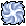

File list
Jump to navigation
Jump to search
This special page shows all uploaded files.
{kind=link}
{kind=link}
| Date | Name | Thumbnail | Size | User | Description | Versions |
|---|---|---|---|---|---|---|
| 13:05, 23 June 2021 | WanderingDuckPetWindow.png (file) | 15 KB | Randomced859 | 1 | ||
| 05:22, 7 October 2021 | War nut.gif (file) |  |
14 KB | Randomced859 | 1 | |
| 09:48, 30 September 2016 | Warcry from Beyond.png (file) | 4 KB | Cyphers | 1 | ||
| 05:46, 10 February 2019 | WargMouthMap.png (file) |  |
33 KB | Hatsumei | 1 | |
| 06:59, 2 November 2016 | Warg Bite.png (file) |  |
405 bytes | Ggboyz | 1 | |
| 23:35, 10 October 2016 | Warg Mastery.png (file) | 3 KB | Inberun | 1 | ||
| 23:29, 30 September 2016 | Warg Rider.png (file) | 3 KB | Inberun | 1 | ||
| 23:29, 30 September 2016 | Warg Strike.png (file) | 3 KB | Inberun | 1 | ||
| 23:33, 13 January 2018 | WarlordInventoryPic.png (file) |  |
525 bytes | Shalltear | 1 | |
| 13:26, 5 October 2016 | Warmer.png (file) |  |
447 bytes | Seandh | 1 | |
| 12:48, 25 December 2022 | Warning-gif.gif (file) | 12 KB | Potter | 1 | ||
| 12:50, 25 December 2022 | Warning-new.png (file) |  |
668 bytes | Potter | 1 | |
| 13:43, 26 December 2017 | Warning.png (file) |  |
2 KB | Mayo | 1 | |
| 21:42, 14 May 2020 | Warper Icon.png (file) |  | 1 KB | Submarine | Warper Head Icon | 1 |
| 22:15, 23 November 2018 | Watcher1.png (file) | 191 KB | AloeLeaflet | 1 | ||
| 22:15, 23 November 2018 | Watcher2.png (file) | 39 KB | AloeLeaflet | 1 | ||
| 22:15, 23 November 2018 | Watcher3.png (file) | 20 KB | AloeLeaflet | 1 | ||
| 22:15, 23 November 2018 | Watcher4.png (file) | 43 KB | AloeLeaflet | 1 | ||
| 13:27, 5 October 2016 | Water Insignia.png (file) |  |
475 bytes | Seandh | 1 | |
| 18:46, 4 January 2021 | Water garden.png (file) |  |
7 KB | I Know To Write | 1 | |
| 22:36, 7 August 2021 | Water garden instance.png (file) |  |
73 KB | I Know To Write | 2 | |
| 15:23, 7 January 2016 | Watery Evasion.png (file) | 557 bytes | Pruu | for use in Pruu's Guide to Kagerou/Oboro for PVM | 1 | |
| 00:30, 11 February 2019 | Weakened fafnir.gif (file) | 30 KB | Panic | 1 | ||
| 00:49, 7 February 2019 | Weakened fafnir.png (file) | 10 KB | I Know To Write | 1 | ||
| 22:46, 4 October 2016 | Weapon Blocking.png (file) |  |
3 KB | Inberun | 1 | |
| 04:47, 1 November 2016 | Weapon Crush.png (file) | 3 KB | Sanoshi | 1 | ||
| 04:15, 3 October 2016 | Weaponblocking.png (file) |  |
492 bytes | Windrell | 1 | |
| 09:57, 24 November 2018 | Weight.png (file) | 30 KB | I Know To Write | 1 | ||
| 12:00, 7 November 2020 | Weiss sonicwave.gif (file) | 2 MB | Nithraniel | 1 | ||
| 03:48, 13 July 2022 | Welding Enchants HW.PNG (file) |  |
3 KB | HairyWizard | 1 | |
| 09:41, 9 September 2016 | Wellchewed.png (file) |  |
208 bytes | Appleproject | 1 | |
| 18:53, 12 November 2015 | Wellchewedpencil.png (file) |  |
4 KB | Adri | 1 | |
| 14:22, 18 September 2020 | What not to do.jpg (file) | 23 KB | G00suede | Reverted to version as of 14:17, 18 September 2020 (UTC) | 5 | |
| 00:29, 27 May 2020 | Where-example.png (file) | 4 KB | Submarine | Example of the /where command | 1 | |
| 13:27, 5 October 2016 | Whirlwind.png (file) |  |
1 KB | Seandh | 1 | |
| 02:42, 27 October 2019 | WhisperPetWindow.jpg (file) |  |
3 KB | Randomced859 | 1 | |
| 23:24, 24 November 2015 | WhiteDyestuffs.gif (file) | 284 bytes | Lai | 1 | ||
| 23:24, 24 November 2015 | WhiteRibbon.gif (file) |  |
132 bytes | Lai | 1 | |
| 17:39, 23 October 2016 | White Imprison.png (file) |  |
454 bytes | Ggboyz | 1 | |
| 21:48, 15 June 2022 | White Porcellio Damage.PNG (file) | 91 KB | HairyWizard | 1 | ||
| 06:24, 9 April 2016 | White Potion.gif (file) |  |
303 bytes | Ihsan | 1 | |
| 18:14, 8 July 2016 | White Wing Suit.png (file) | 35 KB | Deegs | 1 | ||
| 17:44, 11 April 2018 | White knight helm.JPG (file) | 9 KB | Pinkpanda82 | 1 | ||
| 00:53, 10 September 2015 | White potion.png (file) | 473 bytes | AloeLeaflet | 1 | ||
| 20:40, 17 December 2015 | Whitecathood.png (file) | 570 bytes | Ariden | 1 | ||
| 00:58, 18 September 2015 | Whiteherb.png (file) | 411 bytes | AloeLeaflet | 1 | ||
| 14:09, 3 November 2015 | Wickebine.png (file) | 4 KB | Adri | 1 | ||
| 02:42, 27 October 2019 | WickedNymphPetWindow.jpg (file) |  |
8 KB | Randomced859 | 1 | |
| 07:56, 8 July 2018 | Wiki101-01CreateAccount.PNG (file) | 95 KB | Renata | 1 | ||
| 08:08, 8 July 2018 | Wiki101-02EditFromSource.png (file) | 87 KB | Renata | 1 |
{kind=link}
{kind=link}
{kind=link}
{kind=link}
{kind=link}
{kind=link}
{kind=link}
{kind=link}
{kind=link}
{kind=link}
{kind=link}
{kind=link}
{kind=link}
{kind=link}
{kind=link}
{kind=link}
{kind=link}
{kind=link}
{kind=link}